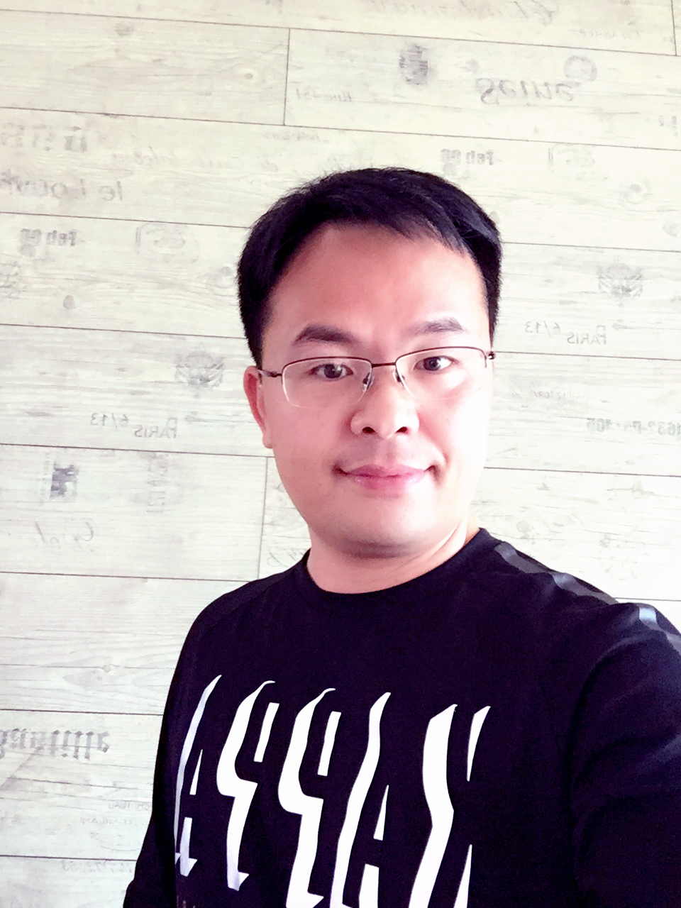

Strengths
Communication, relationship building, commercial awareness and motivating teams around demanding targets.
Master of Business Management candidate
I am YuanJing Ye: a sales, marketing and business leader combining international commercial experience with postgraduate study in New Zealand.
Focus
Sales strategy
Digital growth
Team leadership
01 / About me

I am YuanJing Ye, currently completing a Master of Business Management at ICL Graduate Business School. I bring more than a decade of leadership experience in international sales, marketing and business operations.
Most recently, I was Sales and Marketing Director at Shenzhen Kabei Electronics Co., Ltd, where I led a ten-person team, represented the company at global trade events and supported annual sales turnover of approximately USD 15 million. Before that, I was Chief Executive Officer of Shenzhen iPeace Entity Co. Ltd, leading strategy, operations, product and market development.
My immediate goal is to move into a senior commercial or general-management role in New Zealand. Longer term, I aim to lead or establish a growth-oriented business that connects innovative products with global customers through ethical, data-informed strategy.
Self-evaluation
Communication, relationship building, commercial awareness and motivating teams around demanding targets.
More systematic evidence-based decisions, earlier delegation and stronger reflective leadership.
Use structured analysis, seek feedback, practise active listening and build coaching habits.
This reflection draws on the personal-skills approach of Whetten and Cameron: management behaviours can be assessed, practised and improved.
02 / Featured project
An eight-month inventory and replenishment optimisation project for G.A.S Petrol Station Convenience Store in Waitoki, New Zealand.
Busy staff had to serve customers, support fuel sales and prepare food while also restocking beverages. Products could remain in the backroom, causing shelf stockouts, lost sales and poor customer experience.
As System Coordinator, I was responsible for inventory review, fast-moving SKU identification, storage analysis, layout and location-coding design, the replenishment SOP, checklist, trigger-line system and storage map.
Working with the project team, I helped turn sales and stock evidence into a practical visual system: Top 20 products, zoning, reusable coding templates, labels and short staff training during quiet trading periods.
Within the NZD 15,000 project plan, the pilot aimed for at least 30% fewer beverage stockouts, 25% faster backroom locating time, 90% replenishment accuracy for priority items and 90% SOP compliance.
Project-management learning: a system succeeds only when it is simple enough for busy staff to use consistently. The plan integrated a WBS, RACI chart, schedule, risk controls, change management and pilot monitoring, while keeping the scope limited to the beverage category.
01
By completing my degree, use structured analysis in at least three course or workplace decisions, combining market data, stakeholder views, risks and recommended action.
02
Over the next 12 months, hold monthly coaching conversations that create ownership, agreed actions and follow-up.
03
Within 12 months of graduating, secure a sales, marketing, business-development or general-management role with responsibility for growth, customers or teams.
04
By July 2027, develop an active network of 30 relevant contacts in international trade, e-commerce and marketing.
04 / Reflective learning
One of the most valuable ideas from management learning has been that effective leadership begins with self-awareness. The personal-skills approach encouraged me to consider not only what I achieve as a manager, but how my behaviour affects other people. Skills such as supportive communication, problem-solving and team leadership can be developed deliberately through feedback, practice and reflection.
This is useful because my previous roles often required quick decisions and a strong focus on performance. Those strengths helped deliver results, but they can also reduce opportunities for others to contribute ideas. I now pause before important discussions to consider the outcome I want, whose perspective may be missing and how I can encourage an open conversation. Rather than moving directly to a solution, I ask questions that help others take ownership. I will use regular feedback and short reflection notes after major meetings to become a more balanced leader: focused on outcomes while building trust, learning and accountability.
Strategic-management learning developed my understanding of how structured analysis improves business decisions. I learnt to test assumptions by examining the external environment, customers, competitors, organisational capability and risk. Frameworks do not replace judgement, but they provide a disciplined way to test whether an attractive idea is an achievable strategy.
This matters in international sales and marketing, where trends, customer preferences and competitor activity change quickly. Experience and intuition are valuable, but they should be supported by evidence. I now see trade shows, marketplaces and social media as connected parts of a customer-acquisition and relationship strategy. In future, I will use a one-page decision brief for significant initiatives: problem, evidence, options, risks, recommendation and success measures. It will improve discussion with colleagues and make decisions easier to review later.
A major leadership lesson has been the difference between assigning work and genuinely developing people. Delegation involves clarifying outcomes, providing appropriate authority and support, then trusting people to use their judgement. Coaching helps people think through problems instead of becoming dependent on the manager for every answer.
In demanding sales environments, it can feel faster to make decisions personally. However, this creates bottlenecks and limits growth. I have started changing progress conversations: instead of only asking for updates, I ask what the person has learnt, what obstacles they see and what they recommend. For future work, I will use clear delegation agreements covering the expected result, deadline, decision rights, resources and review points. My goal is to maintain high standards without controlling every detail.
Project-management learning showed me how to turn broad goals into manageable actions. A project needs clear scope, milestones, responsibilities, stakeholder communication and risk management. I have often managed complex activity through experience and personal oversight; formal tools now give me a more transparent way to align people and protect important work.
This was especially relevant to trade-show preparation and campaigns, which require product preparation, logistics, staff briefing, lead collection and follow-up. I will begin major work with a concise charter defining deliverables and success measures, then use a risk register and regular updates. This is not bureaucracy. It is a practical way to manage competing priorities and improve the chance of achieving a valuable result.
My studies and international experience have reinforced that a message is effective only when the audience understands both the information and its relevance. I have learnt to adapt detail, tone, evidence and channel while remaining clear and respectful. A customer presentation, a management report and a conversation with a team member need different approaches.
Working across English- and Chinese-speaking environments has shown me why this matters. I aim to explain value clearly, check understanding and follow up professionally. For future academic and workplace projects, I will prepare key messages before meetings and record responsibilities and decisions in clear language. In a New Zealand leadership role, cultural intelligence and inclusive communication will be essential to building trust and shared understanding that leads to action.
Peer feedback on a project plan and report highlighted commitment, reliability with deadlines and practical business experience as strengths. It also identified a useful development area: involving others earlier in planning and making written recommendations more concise and supported by evidence.
This feedback helped me see how a fast, action-oriented style can be valuable yet leave less room for consultation. I now aim to agree roles, milestones and communication methods at the beginning of group work; seek ideas before drafting recommendations; and check that evidence, analysis and conclusion are clearly linked. Feedback is most valuable when it produces specific action. I will continue asking for it after group assessments and presentations so I can become a more collaborative and evidence-focused professional.